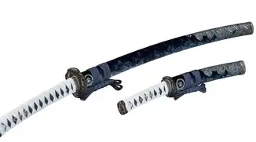
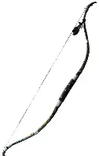
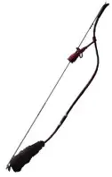

There are many diffrent weapons in Ghost of Tsushima, lets talk about the main ones.
The first and most important weapon to discuss is the katana. It is the main weapon throughout the game and features four different fighting styles, each designed to counter a specific type of enemy. Next is the tanto, a short dagger used for assassinating enemies. Then comes the half bow that is effective at close to medium ranges, and finally the longbow that excels at long distances and is especially useful against armored enemies.

